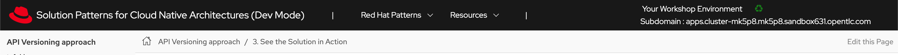

Solution Pattern: Event Driven API Management
See the Solution in Action
1. Setup the solution
To provision the demo you will perform the following steps :
-
Gain access to Red Hat OpenShift.This solution pattern has been tested on OpenShift 4.14
-
Ensure you have the tools oc and other pre-requisites tools in your local linux based environment such as your laptop
-
Access the OpenShift cluster with cluster-admin privileges
-
Log in to OpenShift with cluster-admin role via cli
-
Run the installation script to deploy the Solution Pattern in your OpenShift cluster
1.1. Pre-requisites
Here is the list of tools you need in your local environment so that you can use the automated installation:-
Openshift RWX storage class is required for 3scale System6 FileStorage.
To check if you have the CLI tools, you can open your terminal and use the following commands:
oc version #openshift cli client
jq –version
yq –version
podman –version1.2. Installing the demo
-
Login to your OpenShift cluster as cluster-admin (because a number of operators will need to be installed)
-
Click on the username on the top right hand, and then click on Copy login command. This will open another tab and you will need to login again
-
Click on Display token link, and copy the command under Log in with this token. This will look like this
oc login --token=<token> --server=<server>-
Clone the scripts as follows in an appropriate folder in your local enviroment
git clone https://github.com/rh-soln-pattern-event-driven-api/infra-
Run the following command to start the installation and replace the variable with your openshift RWX storage class
./install-all.sh <<RWX-StorageClass>>The following output is generated by executing the installation command provided above:
Deployment of Webhook delivery system has been completed.
1.3. Personalize the instructions
To personalize the rest of the instructions to your OpenShift environment,
-
At the top-right of this page enter
-
subdomain to match your OpenShift cluster under the Your Workshop Environment section
-
-
Press enter or click on the Set button

-
The menubar and the rest of this walkthrough guide will be updated with the username and subdomain as shown below

|
The subdomain would look something like this |
2. Workshop Walkthrough guide
2.1. Explore the environment
Let’s walk through an overview of the components that have been setup already
-
Launch the OpenShift console and login
-
Review installed components in each namespace as in the below table and animated image
Namespace |
Components |
webhook-system-3scale |
|
webhook-system-amq-broker |
|
webhook-system-kafka |
|
webhook-system-data-grid |
|
openshift-keda |
|
webhook-system |
|
webhook-system-shipping-consumer |
|
2.2. As an API provider
The installation script uses 3scale operator cabaility to create "Order-Created-Event" product artifacts (backend,mapping rules,policy configuration,application plans,ActiveDocs) ,
-
Open the admin portal and sign in using admin/admin
-
Click on "Order-Created_Event" product in the dashboard page
-
Review the structure of the event driven product as in the below animated screenshots
Webhook delivery system components
In the openshift console topology view select project webhook-system has below 4 deployments:
-
Webhook-creator: Camel Quarkus implementation to the webhook creator service.
-
Webhook-dispatcher: Camel Quarkus implementation to the Webhook dispatcher service
-
Camel-proxy: Camel Quarkus implementation to 3scale custom policy using Camel service policy that implements HMAC policy and provides dynamic routing to the webhook endpoint.
-
Order-event-simulator: Camel Quarkus service that produces order-created events in Kafka topic based on received input HTTP JSON message.
|
The webhook-creator and dispatcher services are scaled to zero (no pods are running) as KEDA rules are configured using ScaledObject CRD with a scale-to-zero strategy when no messages in the Kafka topic or AMQ Broker Queue. |
The source code for the webhook system components can be found in this repository
2.3. As an API Consumer
As Globex’s shipping partner, I need to create a consumer application for the Order-Created-Event product through the developer portal to register my webhook endpoint to start receiving notifications for newly created orders to integrate it with the internal shipping process. Follow the below steps to update the pre-build created application:-
-
Open the developer portal and sign in using john/123456
-
Click on shipping-unlimited-application
-
Copy the generated MAC Secret into the clipboard and click on the Edit link in the right corner "Edit shipping-unlimited-application"
-
Edit the Webhook URL text box with this URL https://webhook-consumer-shipping-webhook-system-shipping-consumer.%SUBDOMAIN% and click on the Update Application button
-
In the Openshift console topology view inside webhook-system-shipping-consumer project, click on Edit Deployment
-
Edit the environment variable named "macSecret" with the copied value and click on the Save button
API consumers can see the structure of the data that will be sent to the provided webhook endpoint through the API documentation section in the developer portal, this includes detailed schemas for the JSON or XML payloads with examples, security specifications, and response codes. This will allow developers to prepare their endpoints to correctly parse and utilize the incoming data.
2.4. Testing the solution
-
Review is the content sample of order.json which will be used as testing data for one below order
{
"orderId": "1001XYZ",
"name": "John Doe",
"email": "johndoe@example.com",
"status": "ORDER_CREATED",
"accountId": "200345",
"createdAt": 1691797320000
}2.Use curl to send HTTP request to the simulator service which will post the testing order to the Kafka topic
curl -X POST -H "Content-Type: application/json" -d @webhook-system/order.json https://order-event-simulator-webhook-system.%SUBDOMAIN%The curl command will print the below message in the terminal
Request received-
Check the logs of the webhook-consumer-shipping pod, and notice that the pod received the webhook successfully.
-
Since the Webhook Creator service features idempotent processing, repeating the same cURL command within the configured timeout period of the DataGrid cache (10 minutes) will not result in duplicate messages. The screenshot below displays the DataGrid console showing the cache entries.
-
Visit the statistics page in the developer portal and notice the chart shows one hit to the webhook endpoint.
2.5. Testing the scalability
-
Review is the content sample of orders.json which has more than 40 orders
-
Use curl to send HTTP request to the simulator service which will post the testing order to the Kafka topic
curl -X POST -H "Content-Type: application/json" -d @webhook-system/orders.json https://order-event-simulator-webhook-system.%SUBDOMAIN%The curl command will print the below message in the terminal
Request received-
Check the number of scaled pods for webhook-creator and webhook-dispatcher pods in the topology view
Alternatively, you can use oc get pods with the watch command to see the scaling up/down of pods as below
oc get pods -n webhook-system -wAfter all, messages are consumed, there will be no messages left on the Kafka topic or in the AMQ Broker queue. KEDA waits for the cooldown period (in this demo 40 seconds) and then scales down the deployment to zero.
3. Conclusion
Here are the key takeaways from the event-driven API management solution pattern:
-
Today’s modern application architectures require more than the traditional request-response patterns of REST APIs for facilitating real-time communication and events, webhooks have become the predominant API pattern for handling asynchronous interactions.
-
Red Hat Application Foundations provides flexible architecture choices for building a scalable webhook delivery system, allowing you to select the right component for the job.
-
Developers can discover, access documentation, and subscribe to event-driven API products through the 3scale developer portal just like traditional REST APIs.